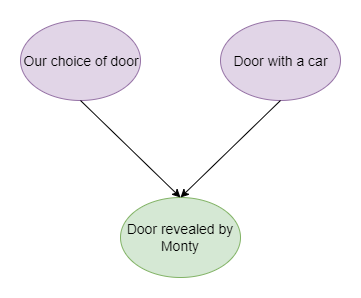
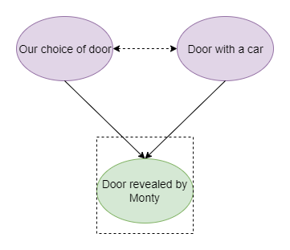

Named after the host of the popular game show “Let’s Make a Deal,” the Monty Hall problem is a classic example of how our intuition can sometimes lead us astray when it comes to probabilities.
The problem goes like this: You’re a contestant on “Let’s Make a Deal” and are asked to choose one of three doors. Behind one of the doors is a brand new car, while behind the other two are goats. After you make your choice, Monty Hall opens one of the other two doors to reveal a goat. He then gives you the option to (1) stick with your original choice or (2) switch to the other unopened door.

What should you do? Should you stick with your original choice or switch to the other door?
Many people’s intuition tells them that it doesn’t matter whether they stick with their original choice or switch and the probability of winning the car is 1/3 no matter what.
Is this correct? In this blog post, I will introduce various methods to solve this puzzle, including probability theory, causal diagrams, and simulations. All code can be accessed here.
Probability Theory
One straightforward approach is to apply the Bayes’ theorem to calculate and compare the probability of winning between switching and not switching. To simplify the analysis, we can define two events: event A is when the car is behind the remaining door, and event B is when Monty chooses a door with a goat. Our objective is to determine the probability that the car is behind the remaining door given Monty’s exposure door. If the probability is high, then switching would be a better choice, and vice versa.
Assuming our initial choice is Door 1 and Monty opens Door 2, we can use Bayes’ theorem to calculate the conditional probability of the car being behind Door 3 given that Monty opened Door 2. The calculation is as follows:
\[ P(A|B) = \frac{P(B|A) \times P(A)}{P(B)} \]
Now, let’s figure out what each part represents. \(P(B|A)\) is 1 because Monty should never reveal a car by design and our choice of Door 1 rules out another option. We also have \(P(A) = 1/3\), since a car is equally likely to be assigned to one of the three doors. The marginal probability \(P(B)\) that Monty opens Door 2 without conditioning on what the remaining door contains is 1/2, as our initial choice leaves him two options to pick.
Taken together, we have the probability of winning for switching is \(P(A|B) = \frac {1 \times 1/3}{1/2} = 2/3\) and the probability of wining for sticking to the initial choice is \(1 - P(A|B) = 1/3\). So yes, the correct answer is we should always switch!
Causal Diagrams
Judea Pearl’s The Book of Way sheds a new light on this classic probability puzzle. The key is go beyond the data itself and think through how the data was generated. Let’s start with the question: what determines which door will be opened by Hall?
Our choice of door excludes one option he could open. Knowing that which door that does have a goat behind it means that he has to choose a different one as well if possible. In this case, we end up with the following causal diagram where door to be opened is a collider.
What will happen if we condition on a collider? In other words, what if we take action based on Monty’s choice of door? In causal graph terms, conditioning on a collider creates an association between previously independent variables (causal diagrams shifting from the left to the right as shown below), in this case, our choice of door and the location of the car. Let’s still assume that our initial choice is Door 1 and Monty opens Door 2. Translating this causal diagram into probabilities, the probability of switching (the car being behind Door 3) conditional on Monty’s choice becomes 2/3 because now the car should be behind one of the remaining two doors, which is greater than 1/3.
More intuitively, the reason why the probability of a car behind Door 1 changes from 1/3 to 2/3 when we condition on Monty’s choice of door is that his choice is not random: he has to pick a door without a car. Monty could not open Door 1 once we chose it – but he could have opened Door 3. The fact that he did not implies that he was forced to and thus there is more evidence than before that the car is behind Door 3.


Simulations
As you may have noticed, solving the Monty Hall problem requires some effort to overcome our intuition. However, there is a more intuitive way to approach this problem: simulations. Using simulations, we can better understand the probabilities at play and verify the counter-intuitive result of the problem.
The basic idea is still to compute and compare the winning probability of switching and not switching, but now let’s play this game 10000 times and compare the relative frequency of winning.
Using exactly the same setup where our initial choice is Door 1, the probability of not switching after 10000 iterations of the game is 0.33.
```{r}
# The winning probability of sticking to the initial choice
set.seed(123)
doors <- c(1,2,3)
count <- 0
for(i in 1:10000) {
car <- sample(doors, 1)
initial_choice <- 1
if(initial_choice == car){
count <- count + 1
}
}
p_stick <- count/10000
```A slightly tricky part is specifying which door Monty will reveal. Following the same logic, Monty will choose a door different from both our initial choice and the door with the car, we can write a simple function as below and compute the relative frequency of winning when we switch. The probability is 0.67, twice as larger as 0.33.
```{r}
# The winning probability of switching to another choice
set.seed(123)
reveal <- function(doors, car, initial_choice) {
if(car == initial_choice){
reveal <- sample(doors[-c(car,initial_choice)], 1)
} else {
reveal <- doors[-c(car, initial_choice)]
}
}
count <- 0
for (i in 1:10000) {
car <- sample(doors,1)
initial_choice <- 1
revealed_door <- reveal(doors, car, initial_choice)
final_choice <- doors[-c(initial_choice, revealed_door)]
if(final_choice == car){
count = count + 1
}
}
p_switch <- count/10000
```I hope this post has highlighted the usefulness of simulations as a tool to gain a more intuitive understanding of probability concepts. By running simulations of the Monty Hall problem multiple times, we can observe how the probability of winning changes when we switch doors, which can be helpful in building a deeper understanding of the problem. Additionally, simulations can also serve as a good way to verify counter-intuitive results and build confidence in other probability-based solutions.